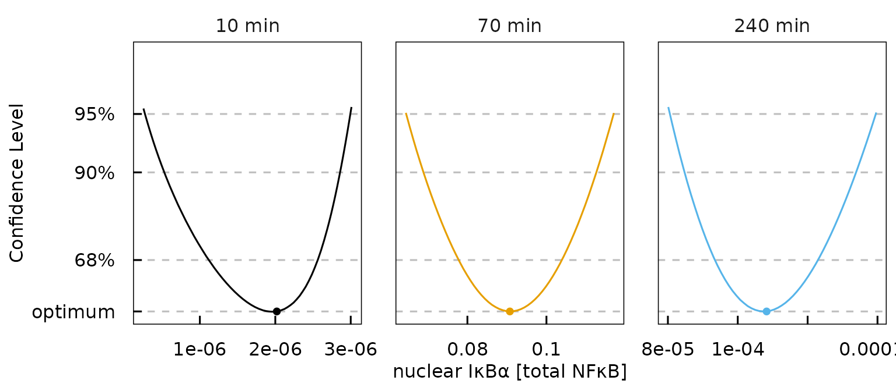
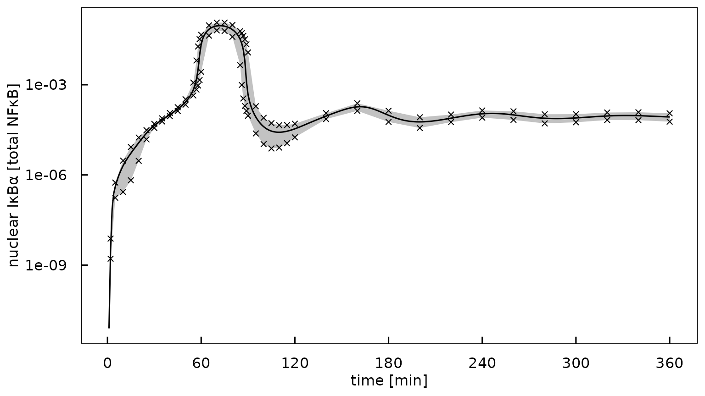
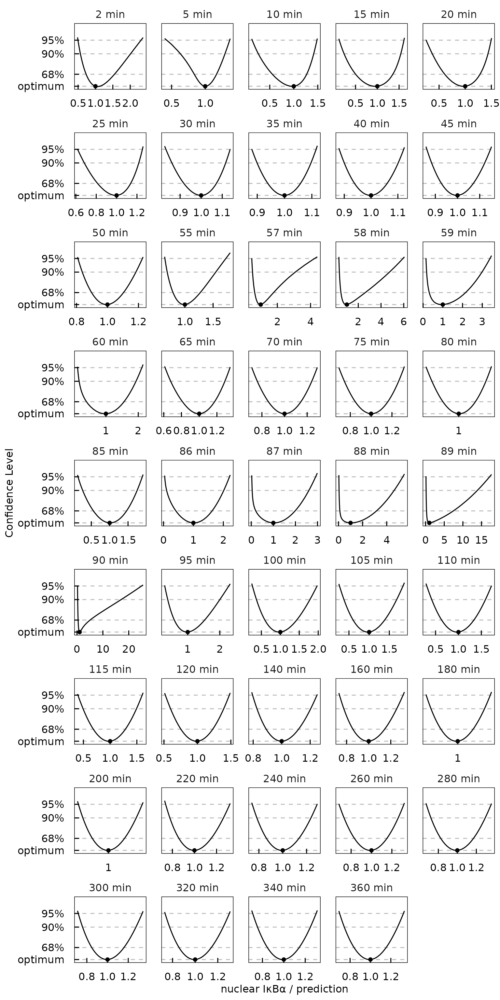

6. Prediction uncertainty
Source:vignettes/articles/guide-prediction-uncertainty.Rmd
guide-prediction-uncertainty.RmdThe prediction profile likelihood [1] gives the confidence
band of a model prediction directly, without parameter intervals. This
chapter computes the band of nuclear IκBα after TNFα in the reduced
model of Profile likelihood; nuclear
IκBα is not measured and decides when NFκB leaves the nucleus [2, Fig. 5].
The code is prediction.R.
Prediction profiles and validation data points
The prediction profile is the objective minimized over all parameters
with the prediction held at a value; the values within the \(\chi^2_1\) threshold form the confidence
interval. datapointL2() turns the prediction into a
parameter v, tied to the model by a validation data point
of small standard deviation; the profile of v is the
prediction profile. normL2() predicts at the time of the
point (times = t); attrName = "data" adds the
validation term to the data term, so stop = "data" and
confint(val.column = "data") leave the prior out (Methods > Prediction
profiles).
Prediction band
prediction.R computes the profile in the stimulated
condition at 44 times, densest at the flanks of the pulse. The
prediction spans seven orders of magnitude, so the validation point has
standard deviation \(0.01\,\hat v(t)\)
and the steps are fractions of \(\hat
v(t)\). The profiles run on the linear scale since the resting
state holds no nuclear IκBα; the times start at 2 minutes.
# the readouts of the reduced model and nuclear IκBα, which is 0 at rest
gPrediction <- Y(c(observablesReduced, nIkb = "nIkb"), xReduced,
modelname = "oppelt_red_prediction", compile = FALSE)
ePrediction <- Y(errors, gPrediction, modelname = "oppelt_red_prediction_err", compile = FALSE)
compile(gPrediction, ePrediction, output = "oppelt_red_prediction")
prdPrediction <- gPrediction * xReduced * pReduced
bestReduced <- as.parvec(readRDS("results/reduced.rds")$fits)
predicted <- function(t) {
out <- prdPrediction(t, c(bestReduced, gaugeReduced), deriv = FALSE)$TNF
unname(out[match(t, out[, "time"]), "nIkb"])
}
# densest at the flanks of the pulse of nuclear IκBα
times <- c(2, seq(5, 55, 5), 57:59, seq(60, 85, 5), 86:89, seq(90, 120, 5), seq(140, 360, 20))
# at time t the prediction is a parameter v, tied to the model by a data point of standard
# deviation 1 % of the prediction that enters the data term; steps relative to the prediction
predictionProfile <- function(t) {
v <- predicted(t)
objV <- normL2(data, prdPrediction, ePrediction, times = t) +
constraintL2(muReduced, sigma = sigmaReduced) +
datapointL2(name = "nIkb", time = t, parameter = "v", sigma = 0.01 * v, condition = "TNF",
attrName = "data")
start <- c(setNames(as.numeric(bestReduced), names(bestReduced)), v = v)
profile(objV, start, "v", fixed = gaugeReduced,
stepControl = list(stop = "data", stepsize = 0.01 * v, min = 1e-3 * v),
algoControl = list(reoptimize = TRUE),
optControl = list(iterlim = 100, tolControl = tolerances))
}
predictionProfiles <- parallel::mclapply(times, predictionProfile, mc.cores = getOption("dMod2.cores"),
mc.preschedule = FALSE)confint() reads the interval from the data term:
band <- do.call(rbind, Map(function(t, pr) {
ci <- confint(pr, level = 0.95, val.column = "data")
data.frame(time = t, value = predicted(t), lower = ci$lower, upper = ci$upper)
}, times, predictionProfiles))
saved <- readRDS("results/prediction.rds")
band <- saved$band
band[band$time %in% c(0, 10, 30, 55, 60, 70, 85, 90, 120, 240, 360), ]
#> time value lower upper
#> 3 10 2.020110e-06 2.709126e-07 2.995447e-06
#> 7 30 4.396783e-05 3.660774e-05 5.001520e-05
#> 12 55 6.835130e-04 4.411350e-04 1.180329e-03
#> 16 60 2.176148e-02 2.693198e-03 4.596473e-02
#> 18 70 9.074645e-02 6.448150e-02 1.170152e-01
#> 21 85 3.227417e-02 4.491027e-03 6.096757e-02
#> 26 90 4.750388e-04 9.344731e-05 1.188119e-02
#> 32 120 3.424165e-05 1.781479e-05 5.058673e-05
#> 38 240 1.082625e-04 8.055950e-05 1.395448e-04
#> 44 360 8.493611e-05 5.922032e-05 1.124327e-04Prediction profiles at three times; all times are in All prediction profiles:
times <- c(10, 70, 240)
shown <- setNames(saved$profiles[match(times, band$time)], paste(times, "min"))
plotProfile(shown, mode == "data") +
ggplot2::facet_wrap(~proflist, scales = "free_x") +
ggplot2::scale_x_continuous(breaks = scales::breaks_pretty(n = 3), labels = function(x) signif(x, 2)) +
ggplot2::guides(color = "none", x = ggplot2::guide_axis(check.overlap = TRUE)) +
ggplot2::theme(panel.spacing.x = grid::unit(1.5, "lines")) +
ggplot2::labs(x = "nuclear IκBα [total NFκB]")
The band around the prediction of the best fit:
controls(gReduced, name = "attachInput") <- TRUE
bestReduced <- as.parvec(readRDS("results/reduced.rds")$fits)
out <- prdReduced(1:360, c(bestReduced, gaugeReduced), deriv = FALSE)$TNF
# the resting state holds no nuclear IκBα, which the log scale leaves out
course <- subset(data.frame(time = out[, "time"], value = out[, "nIkb"]), value > 0)
ggplot2::ggplot(course, ggplot2::aes(time, value)) +
ggplot2::geom_ribbon(data = band, ggplot2::aes(x = time, ymin = lower, ymax = upper),
inherit.aes = FALSE, alpha = 0.3) +
ggplot2::geom_line() +
ggplot2::geom_point(data = band, ggplot2::aes(y = lower), shape = 4) +
ggplot2::geom_point(data = band, ggplot2::aes(y = upper), shape = 4) +
ggplot2::scale_x_continuous(breaks = seq(0, 360, 60)) +
ggplot2::scale_y_log10() +
ggplot2::labs(x = "time [min]", y = "nuclear IκBα [total NFκB]") +
theme_dMod()
Concentrations are in units of total NFκB, set by the gauge of Symmetries.
All prediction profiles
The axis is in units of the prediction \(\hat v(t)\) of the best fit:
relative <- Map(function(pr, v) { pr$v <- pr$v / v; pr }, saved$profiles, band$value)
names(relative) <- paste(band$time, "min")
plotProfile(relative, mode == "data") +
ggplot2::facet_wrap(~factor(proflist, levels = names(relative)), ncol = 5, scales = "free_x") +
ggplot2::scale_x_continuous(breaks = scales::breaks_pretty(n = 3)) +
ggplot2::scale_color_manual(values = rep("black", length(relative)), guide = "none") +
ggplot2::guides(x = ggplot2::guide_axis(check.overlap = TRUE)) +
ggplot2::labs(x = "nuclear IκBα / prediction")
Reference: datapointL2(), profile(),
confint(), plotProfile()
← 5. Profile likelihood | 7. Nonlinear mixed-effects models →